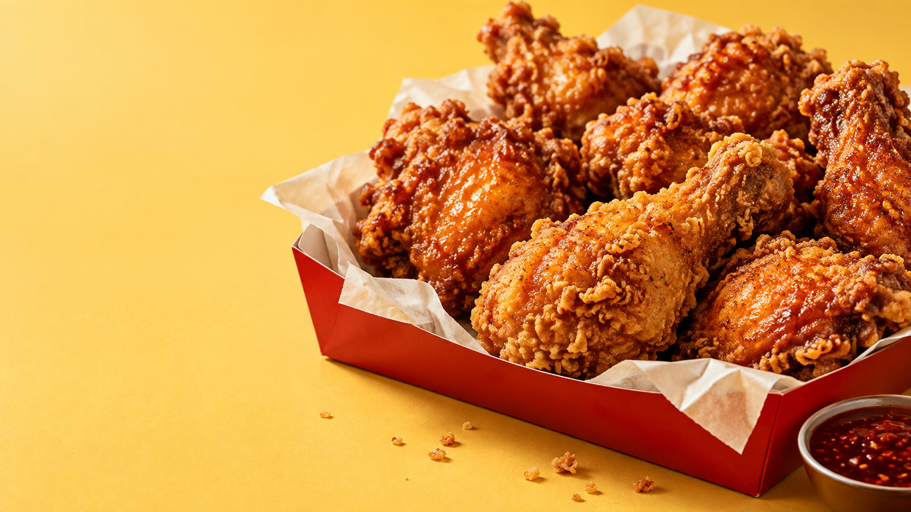

← 포트폴리오

CRUNCH
CLUB®
GOOD FOOD.
GREAT MOOD.
CHICKEN BRAND CONCEPT / 01
오늘은, 바삭하게.
기분까지
바삭
✳
한 입 가득 터지는 바삭함.
좋은 순간엔, 좋은 치킨.
한 번 더 뜯어보기
↗
FULL OF
CRUNCH
FULL OF JOY
GOOD THINGS INSIDE.
OPEN
THE
CRUNCH.
한 입의 즐거움을 열다.
CRUNCH CLUB
HANDLE WITH APPETITE.
인트로 건너뛰기 ↗